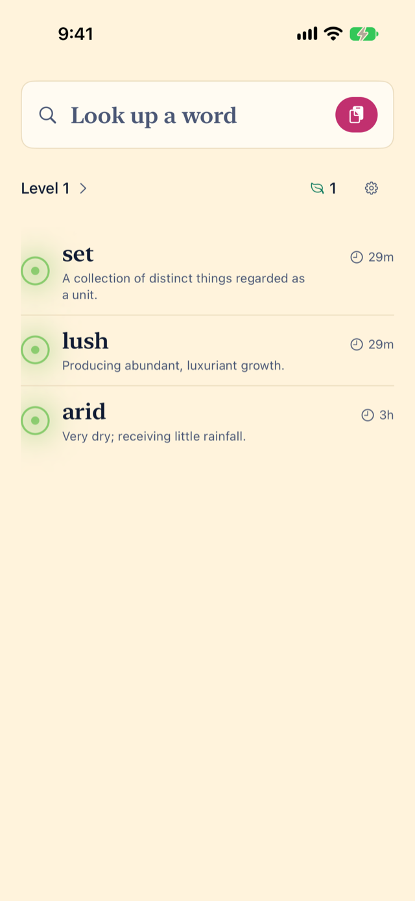
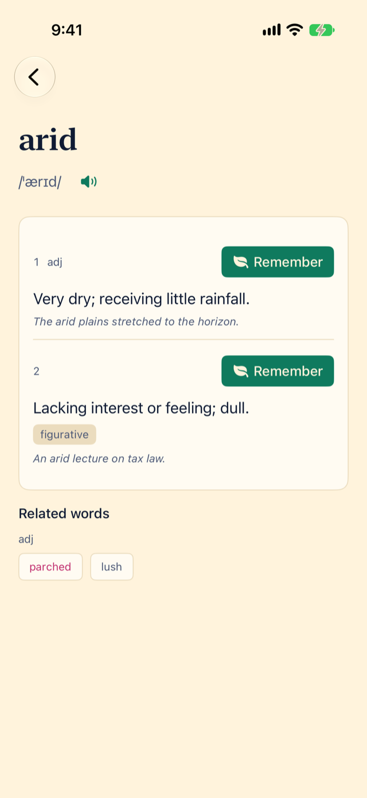
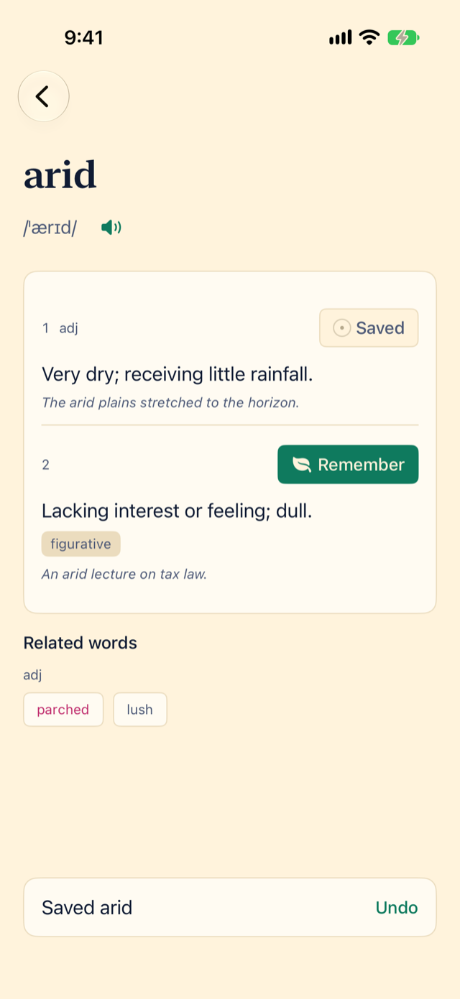
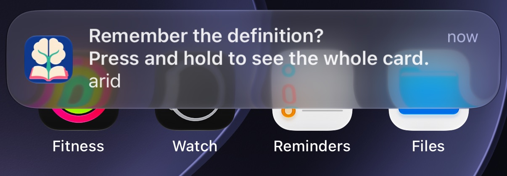
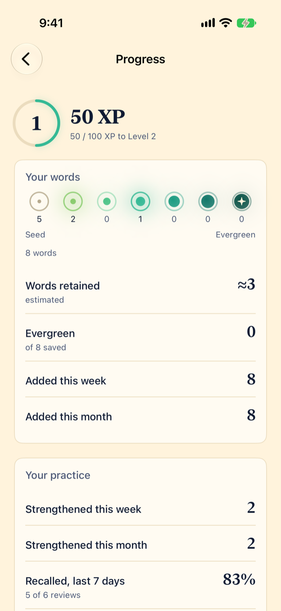

A dictionary for iPhone
Search once, remember forever.
Miji is a dictionary that remembers for you. Look up a word, tap Remember, and Miji turns it into flashcards and brings it back — in notifications you answer from your lock screen — until you genuinely know it.
Backed by memory science. Miji's notification-based system makes it hard NOT to memorize words.
iPhone · iOS 26 or later · English · Works offline · No account

How it works
01
SEARCH WORDS EASILY
A real dictionary, built in and offline: 85,000 English words with pronunciations, examples and synonyms. Type it, paste it, or share it to Miji from any app.
TestFlight link coming shortlySearch once, remember forever.

02
REMEMBER WORDS FOREVER
Ever feel overwhelmed at the idea of making flashcards for every word you look up in the dictionary? Absurdly time-consuming. Now? It's one tap. The cards make themselves... and tell you when it's time to study.
TestFlight link coming shortlySearch once, remember forever.

03
NOTIFICATIONS OPTIMIZED FOR MEMORY
Miji learns how well you know each word and asks again right before you'd forget, using the same spaced-repetition science behind Anki (FSRS). The notification is the flashcard: tap Knew or Forgot and you're done. Forgetting is part of learning, but Miji will NEVER forget to notify you when it's time to challenge your memory! It's impossible NOT to remember words if you stay consistent with Miji!
TestFlight link coming shortlySearch once, remember forever.

04
RANK UP YOUR KNOWLEDGE
Every word has a study-rank. Every answer (knew it or forgot it) gives you XP, because your goal is to practice, not be perfect the first time. Earn XP, and bask in the accomplishment you'll feel when every word-sprout grows into an evergreen-staple of your vocabulary!
TestFlight link coming shortlySearch once, remember forever.

Try Miji
If you've ever looked a word up, and immediately forgot it 5 minutes later, Miji's got your back. Search once, remember forever.
Questions people ask
What is Miji?
A dictionary for iPhone that turns the words you look up into flashcards, then brings them back in notifications until you know them. Search once, remember forever.
How is Miji different from Anki or Quizlet?
You never make a card. Anki and Quizlet are card managers: you build decks, then study them. In Miji the dictionary is the front door — look a word up, tap Remember, done. The scheduling is the same science Anki uses (FSRS); the work of making and organizing cards is gone.
Does Miji make flashcards automatically?
Yes. Tap Remember on any word and Miji creates two cards on its own: one that asks what the word means, and one that asks for the word from its meaning. Nothing to type.
Can I answer a flashcard from the notification without opening the app?
Yes. The notification is the flashcard. It shows the word, and you tap Knew or Forgot right there on the lock screen. Press and hold to see the whole card first.
Does Miji need an account or an internet connection?
No and no. The whole dictionary is on your phone, there is no account, and nothing you save leaves the device. The App Store privacy label is "Data Not Collected."
What spaced-repetition algorithm does Miji use?
FSRS-6, the open-source algorithm behind modern Anki. It predicts when you are about to forget each word and asks just before.
What happens when I forget a word?
It comes back within 30 minutes, and you get the same credit as if you had known it. Forgetting is part of learning; Miji never punishes it.
Is Miji only for English?
For now, yes: 85,000 English words from Wiktionary and Open English WordNet. Other languages, iCloud sync, widgets and Siri are not in yet.
Which iPhones does Miji run on?
Any iPhone on iOS 26 or later.
What does Miji cost?
The TestFlight beta is free.
Where does the dictionary come from?
Wiktionary (through Wiktextract) and Open English WordNet, ranked by word frequency. The database Miji ships is CC BY-SA.
TestFlight link coming shortly